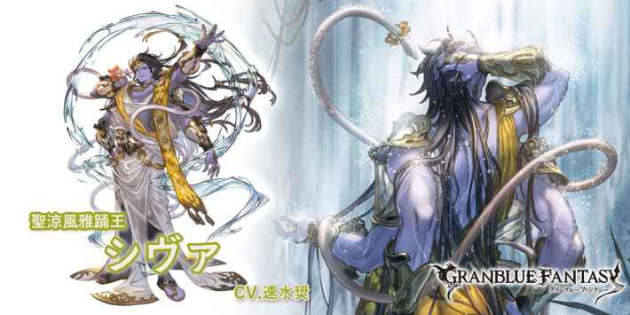

└和天司類衝突
•無法透過平A獲得奧義值
•平A傷害+20%
•必TA
•免疫驅散
水着シヴァ(光)
基本資訊
| 定位 | 攻擊 |
| 得意武器 | 槍/杖 |
| 種族 | 星晶獸 |
| CV | 速水奨 |
立繪
上限解放前||上限解放後奧義
| ガンガーダーラ | |
| 光屬性傷害(倍率12.5倍) 賦予自己2T或1次攻擊+100%(含奧義回合) |
主動技能
| シャタルドリヤ | |
| 對敵方隨機目標造成20次光屬性1倍傷害 敵方全體驅散1個強化效果 賦予自己5T讚神詩效果(無法消除) └天照す旭光(被動1)效果從20%上升至30% |
|
| シャンカラ | |
| 賦予我方全體1次預防頓效果 賦予自己5T吉祥天尊效果(無法消除) └再生の浄火(被動2)效果從500上升至1000 |
|
| マハーデーヴァ | |
| 自己奧義值上升至100% #10回合後追加1次雙奧效果 |
被動技能
|
天照す旭光 |
| 我方光屬性角色對暗屬性角色傷害+20% └和天司類衝突 |
|
|
再生の浄火 |
| 回合結束時，我方全體HP回復(上限500) | |
|
浄滅の輝き |
| 賦予自己以下效果 •無法透過平A獲得奧義值 •平A傷害+20% •必TA •免疫驅散 |